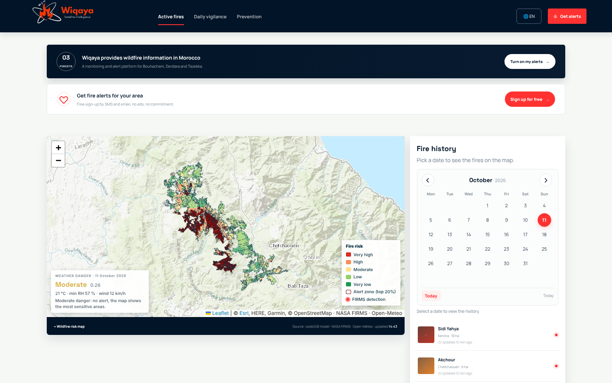
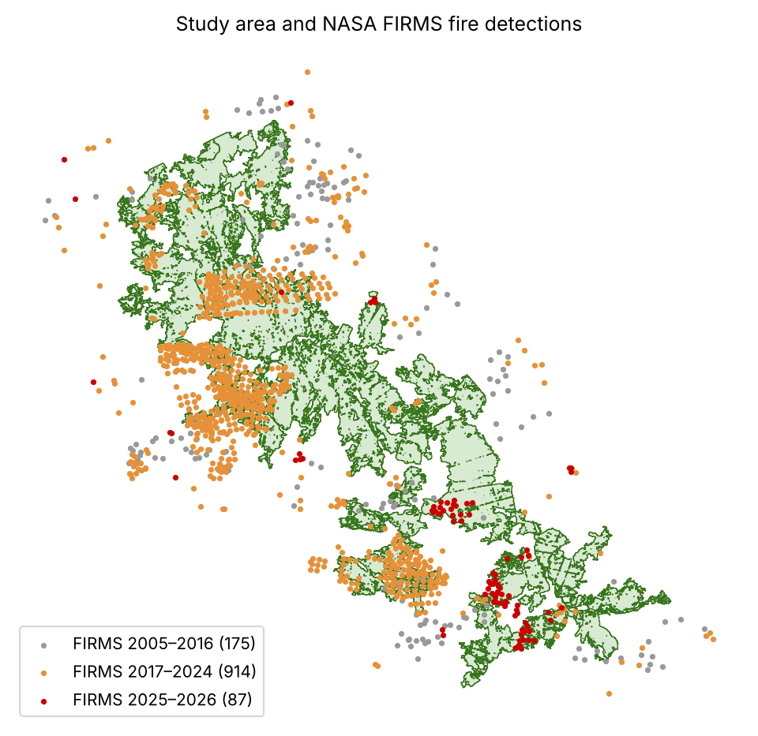
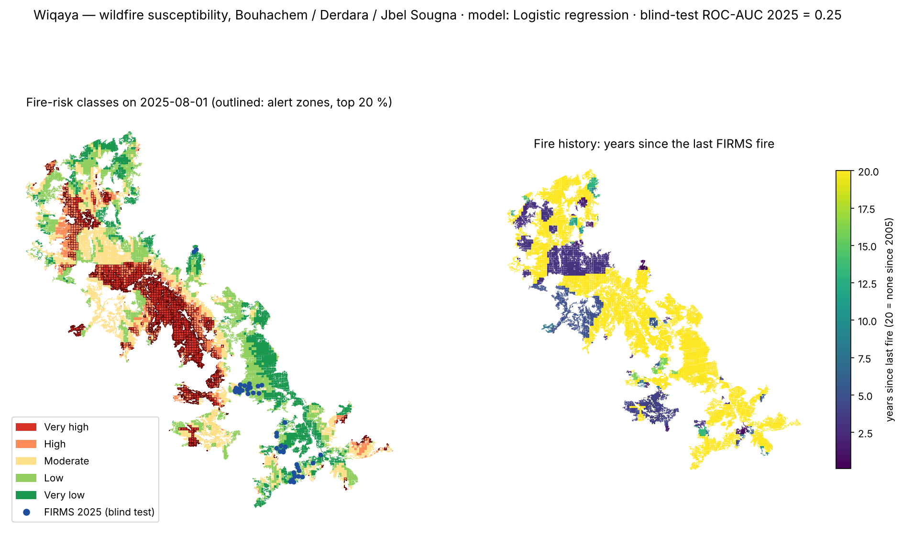
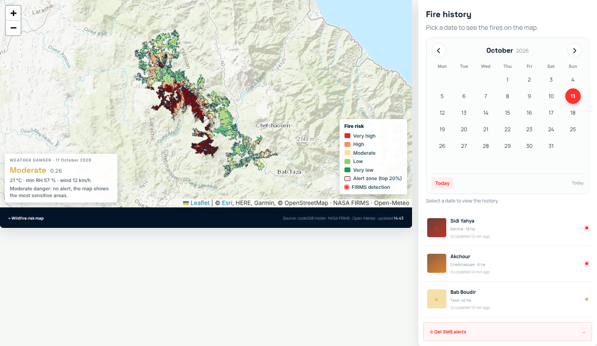
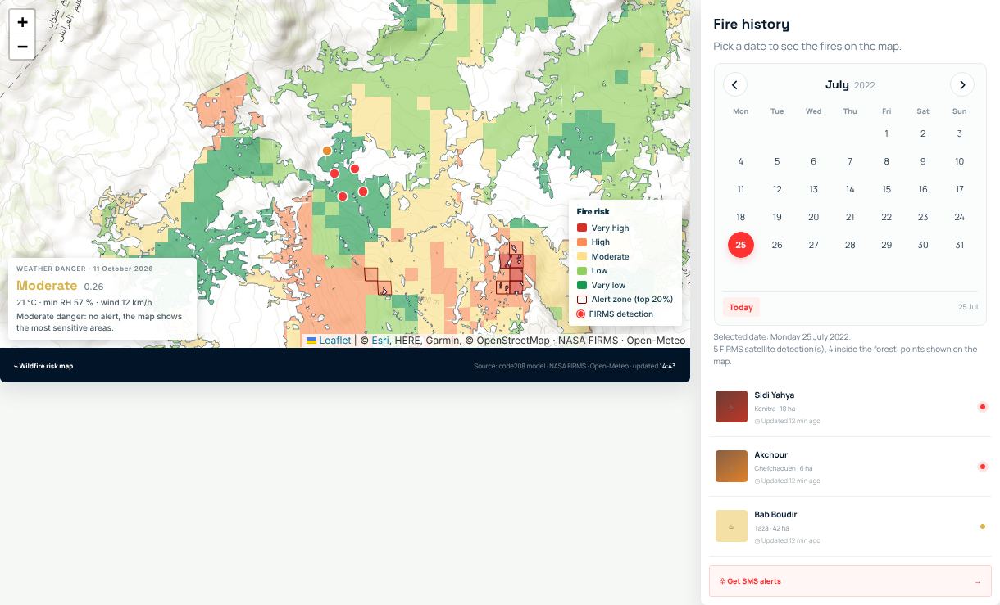
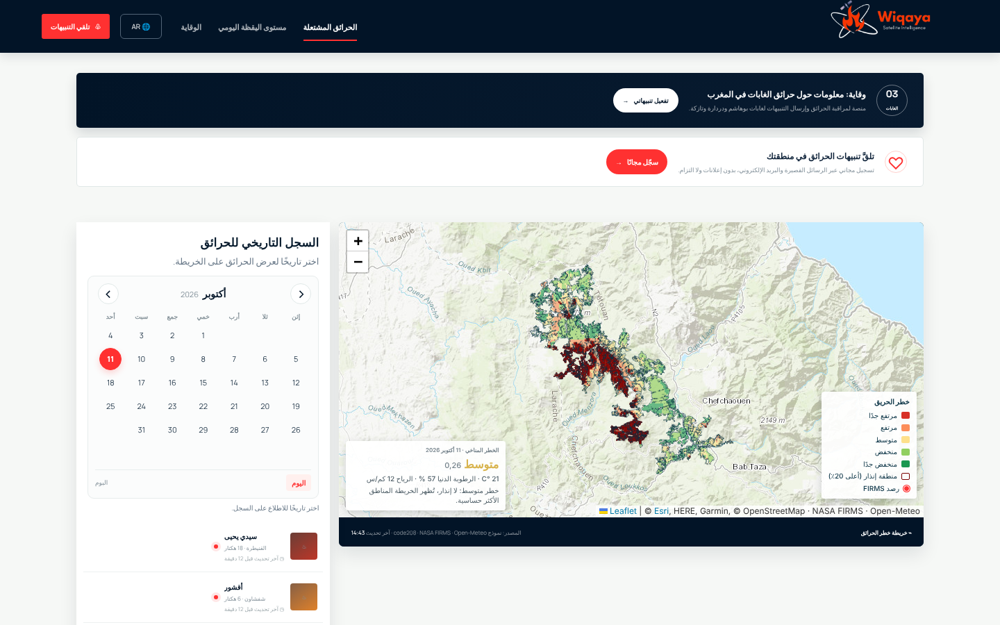
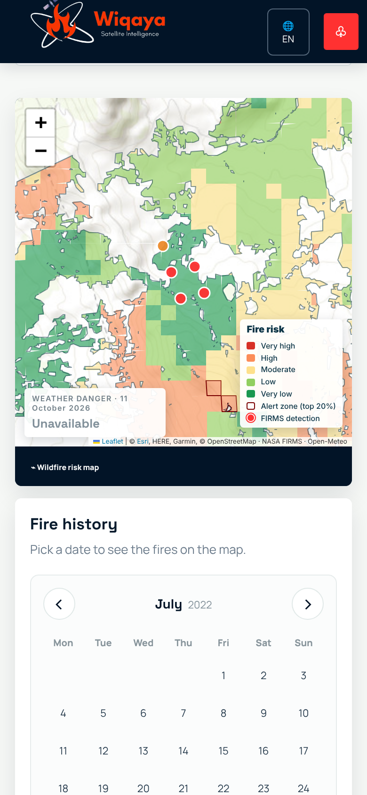
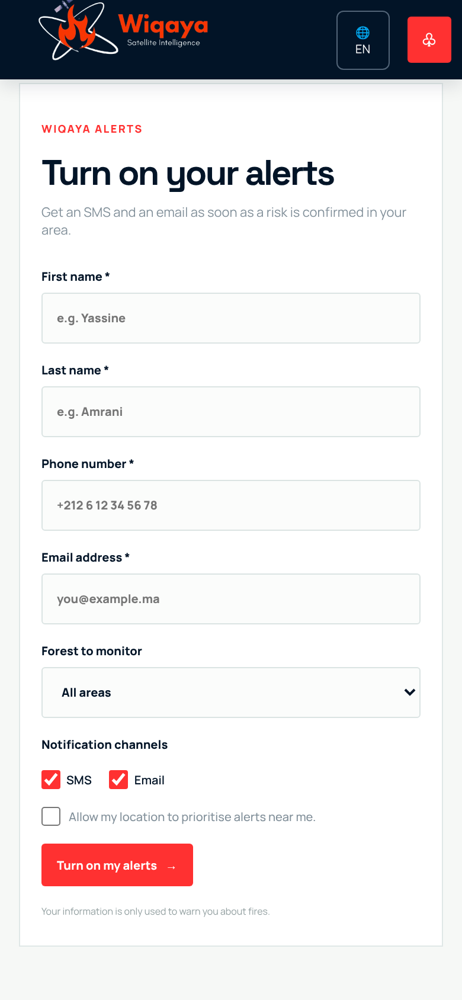

Satellite fire history + terrain + population → a 250 m fire-susceptibility map, a daily weather danger index and trilingual citizen alerts.
| Team | Wiqaya: Sanae Belfrouh, Wiame Kane |
| Country | Morocco |
| Theme | Climate & Disaster Resilience |
| Study area | Bouhachem, Derdara and Jbel Sougna forests (25,900 ha) |


| End users | Forest managers (national forestry agency ANEF), Civil Protection, provinces and communes. Residents of the villages inside and around the forest. |
|---|---|
| Their decision | Every summer morning: where to send patrols, watch-tower crews and first-intervention teams, and whether today is dangerous enough to warn residents and restrict burning and works. |
| What they use today | Province-scale danger bulletins, field knowledge, and fire detections (FIRMS, EFFIS) that come after ignition. No cell-level daily view; no alerts in Arabic and French. |
| What Wiqaya adds | A 250 m risk map with alert zones and an explanation per cell, a daily weather danger index, a 20-year fire history calendar, SMS / email sign-up in Arabic, French and English, and an open GeoJSON API. |
| Business model | Subscription per protected area for institutions (dashboard, API, alert dispatch). Free citizen alerts, funded by the institutional contracts or by CSR partners. Built on open data, so there is no imagery cost. |
| Dataset | Product · provider | Dates | Use |
|---|---|---|---|
| Active fires | NASA FIRMS: MODIS C6.1 and VIIRS S-NPP 375 m | 2005 → 2026 · 1,176 detections | Labels, fire history, history map |
| Terrain | ≈30 m digital elevation model | static | Elevation, slope, aspect |
| Population | WorldPop mar_ppp_2017 (CC BY 4.0) | 2017 | Exposure per cell |
| Weather | Open-Meteo: ERA5 archive and forecast (CC BY 4.0) | 2017 → today | Daily weather danger index |
| Optical (research notebook) | Sentinel-2 L2A and Landsat C2 L2 via Planetary Computer | 2005 → 2025 | NDVI, NDMI, NBR, dNBR burned areas |
| Land cover, OSM (research notebook) | 2021 classification · OpenStreetMap 2022 | 2021–2022 | Fuel, human pressure |
Hyperspectral data: not used in this PoC. It is the first item of the incubation roadmap: EnMAP or Arab Satellite 813 to map live fuel moisture and vegetation species at cell level, the two drivers our current data see only indirectly.
Reproducible: notebooks/02_main_analysis.ipynb runs end to end in about 5 minutes from the committed sample inputs, with fixed seeds and relative paths. The research notebook adds a dNBR-trained "fire day" model with 29 inputs.

results/example_output.png.




| Test | Result |
|---|---|
| Leave-one-year-out 2017–2024, logistic regression (selected) | mean ROC-AUC per year 0.62 · global 0.65 · PR lift 1.64 |
| Leave-one-year-out, random forest | mean ROC-AUC per year 0.56 · global 0.60 |
| Per held-out year | 2018: 0.99 · 2019: 0.88 · 2020: 0.80 · 2021: 0.68 · 2023: 0.23 · 2024: 0.06 |
| Blind test, 2025 fires (39 cells) | ROC-AUC 0.25 · 0 % of fire cells in the alert zones |